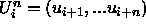
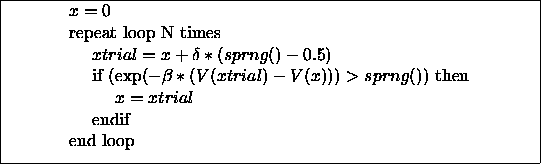
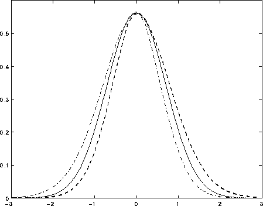
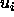
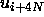
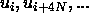

Let us consider the following experiment to verify the randomness of an infinite sequence of integers in [1,d]. Suppose we let you view as many numbers from the sequence as you wished to. You should then guess any other number in the sequence. If the likelihood of your guess being correct is greater than 1/d, then the sequence is not random. In practice, to estimate the winning probabilities we must play this guessing game several times.
This test has certain implications, the most important of which is the uniformity of the individual elements. If the sequence consists of integers in [1,d], then the probability of getting any particular integer should be 1/d. All good sequences are constructed to have this property. But applications in statistical mechanics as well as other real applications rely heavily on uniformity in higher dimensions, at least 4 dimensions if not thousands.
We define uniformity in higher dimensions as follows. Suppose we define n-tuples  and divide the n-dimensional unit hypercube into many equal sub-volumes. A sequence is uniform if in the limit of an infinite sequence all the sub-volumes have an equal number of occurrences of random n-tuples. For a random sequence this will be true for all values of n and all partitions into subvolumes, though in practice we only test for small values of n.
The following simple Metropolis Monte Carlo example demonstrates how
correlations between successive pairs of random numbers can give
incorrect results. Suppose we sample the movement of a particle along
the x axis confined in a potential well which is symmetric about the
origin: V(x)=V(-x). The classic Metropolis algorithm is outlined in
Fig.  . At each step in our calculations, the
particle is moved to a trial position with the first random number
(sprng() ) and then that step is accepted or rejected with the
second random number.
. At each step in our calculations, the
particle is moved to a trial position with the first random number
(sprng() ) and then that step is accepted or rejected with the
second random number.
Fig. shows the results of the particle density
computed exactly (for a harmonic well) with a good random number
sequence, and also with sequences which are deliberately chosen to be
correlated or anti-correlated. In the latter case a high number is
likely to be followed by a low number and a low number by a high
number. The particle density is then not symmetric because movements
to the right are more likely to be rejected than movements to the
left, so that the final distribution is skewed. This occurs despite
uniformity of the individual elements of the sequence.

Figure: Algorithm for simulating movement of the particle.

Figure: Distribution of particle positions in one-dimensional random
walk simulations. The solid line shows the results with an
uncorrelated sequence, the bold dashed line for sequences with
correlation coefficient = -0.2, and the dashed-dotted line for
sequences with correlation coefficient = 0.2.
Now let us imagine how this changes for N particles in three dimensions. The usual Metropolis MC algorithm for a simple classical fluid will use random numbers four at a time (three for the displacement and one for the acceptance test) so that the algorithm is potentially sensitive to correlations between successive quadruples of numbers. But it can also be sensitive to correlations of  with  since one usually goes through the particles in order, causing  to be used for the same purpose on the same particle. Unfortunately, the usual linear congruential generator has correlations between numbers separated by distances that are powers of 2; so it is not a good idea to simulate systems where N is a power of 2 with this generator. In general each Monte Carlo algorithm is sensitive to particular types of correlations, making it hard to define a universal test.